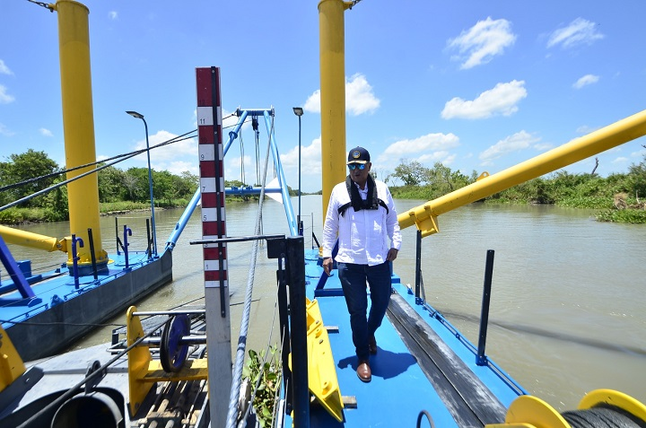
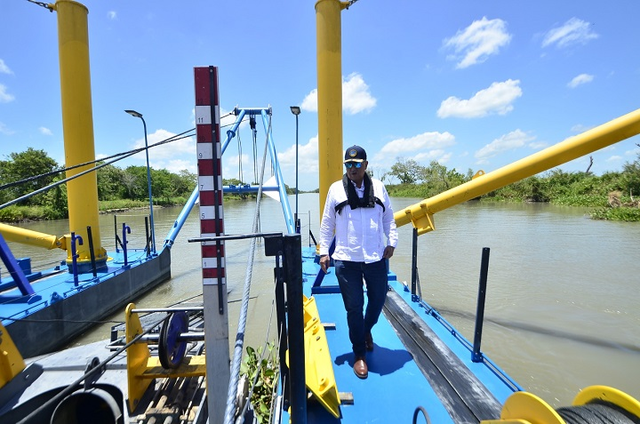

Tratamiento Avanzado
Implementar plantas con tecnología de biofiltración y ósmosis inversa permite eliminar mercurio, plomo y cromo del agua de manera eficiente.
Ver fuente científicaAcciones y estrategias sostenibles que buscan reducir la contaminación por metales pesados y restaurar el equilibrio ecológico del río más importante de Chiapas.
Ver Acciones ↓Implementar plantas con tecnología de biofiltración y ósmosis inversa permite eliminar mercurio, plomo y cromo del agua de manera eficiente.
Ver fuente científicaCrear programas de educación ambiental en escuelas y comunidades fomenta la conciencia sobre el uso responsable del agua y el reciclaje.
Ver iniciativa SEMARNATFortalecer la vigilancia de descargas industriales y aplicar sanciones más severas contribuye a un control real de la contaminación.
Ver normativa CONAGUALos programas de reforestación con especies nativas estabilizan los suelos, reducen la erosión y filtran contaminantes antes de llegar al río.
Ver datos FAOHaz clic en cada paso para conocer su función.
Captación y Cribado
Sedimentación Primaria
Tratamiento Biológico
Desinfección y Vertido
El primer paso consiste en remover objetos grandes como basura y escombros, protegiendo la maquinaria.
Más sobre plantas de tratamiento 


Comparte una acción sencilla que realizarás para cuidar el río y su ecosistema.